編集ツール
⭐1.機能概要
編集ツールには、制作を補助する様々な機能がまとめられています。
主な機能は以下の通りです。
⭐2.陣形生成
🌸1.機能概要
グリッド陣形または環状陣形を利用して、オブジェクトを一括複製できます。
🌸2.対応ユニット
オブジェクトエンティティ、創造物エンティティ、ドロップエンティティ
🌸3.開き方
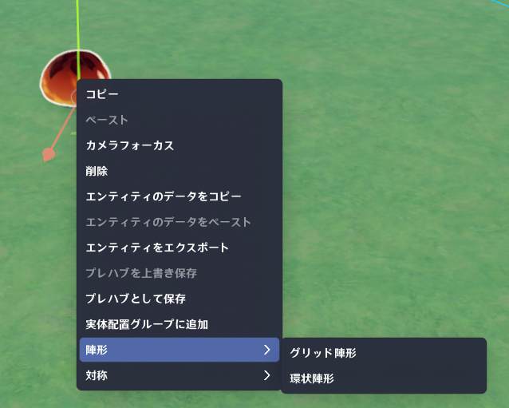
オブジェクトを選択し、右クリックメニューから「陣形」を選択します。
🌸4.グリッド陣形
(1) 機能説明X・Y・Z軸方向に対し、設定した間隔と個数に従ってオブジェクトを配置します。
(2) モードの特徴
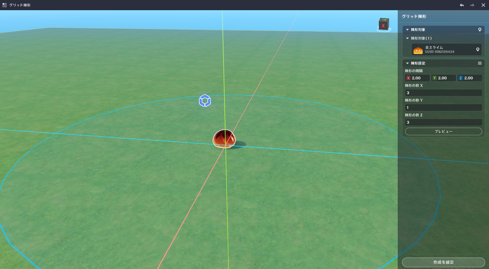
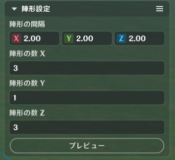
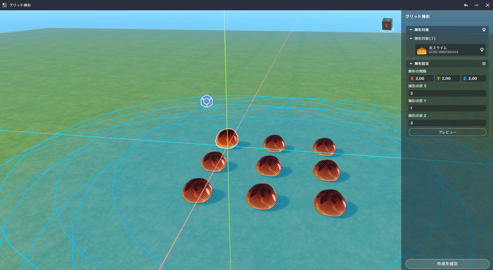
実際には生成せず、配置結果だけを確認できます。
(5) 生成
右下の「作成を確定」を押すと生成され、モード終了となります。
🌸5.環状陣形
(1) 機能説明指定した角度間隔で、中心点を基準に円形配置を行います。
(2) モードの特徴
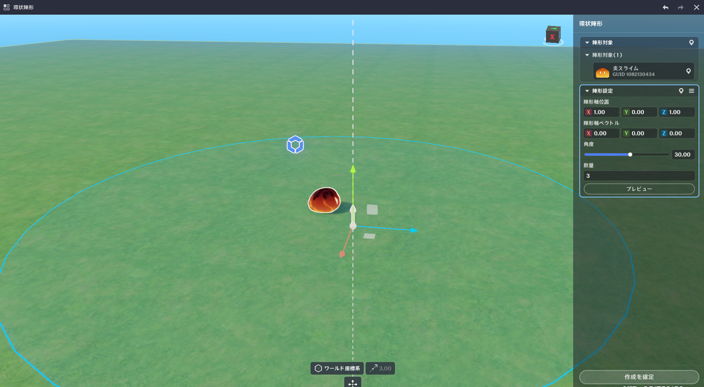
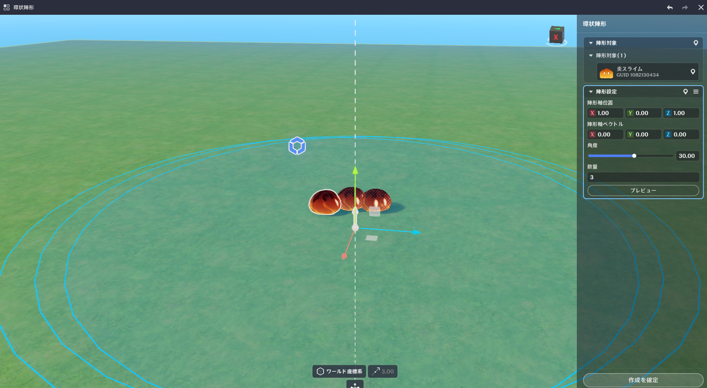
開始位置・向き・角度・個数を基準に円形配置を作成します。
⭐3.対称編集
🌸1.機能概要
中心点・軸・平面を基準にミラーコピーを作成できます。
🌸2.対応ユニット
オブジェクトエンティティ、創造物エンティティ、ドロップエンティティ
🌸3.開き方
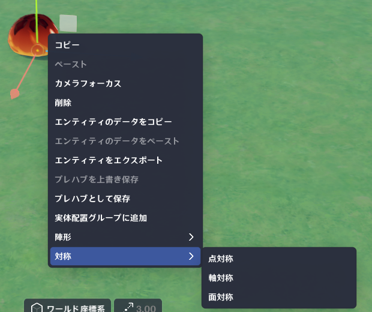
オブジェクトを選択し、右クリックメニューから「対称」を選択します。
🌸4.モードの特徴
🌸5.操作手順
(1) 対称方式を選択右クリックメニューから、「点対称」「軸対称」「面対称」のいずれかの「対称」サブオプションを選択します。
(2) 対称情報を編集
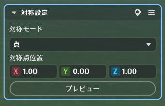
(3) プレビュー
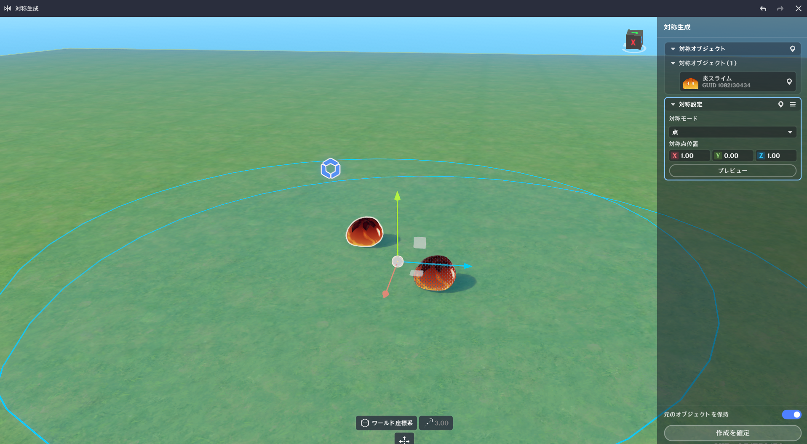
「プレビュー」ボタンをクリックすると、実際に作成することなく対称効果をプレビューできます。 (4) 対称結果の生成
右下の「作成を確定」をクリックすると、対称結果が生成され、モードが終了します。
🌸6.対称方式
(1) 点対称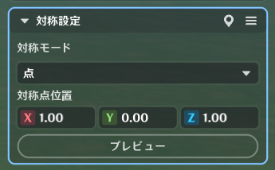
対称点を基準に180°反転した位置と回転を計算して生成します。
(2) 軸対称
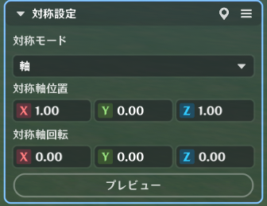
指定した点と軸を基準に鏡写しを計算します。
(3) 面対称
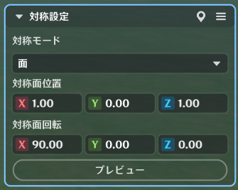
指定した面を基準に鏡写しを計算します。
🌸7.補足
⭐4.バウンディングボックス表示
🌸1.機能概要
オブジェクトサイズを視覚的に確認しながら編集できるため、より正確な配置が可能になります。
🌸2.対応ユニット
オブジェクトエンティティ、創造物エンティティ
🌸3.開き方
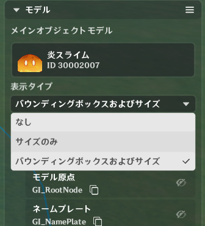
モデル→表示タイプ
🌸4.表示タイプ
サイズのみ
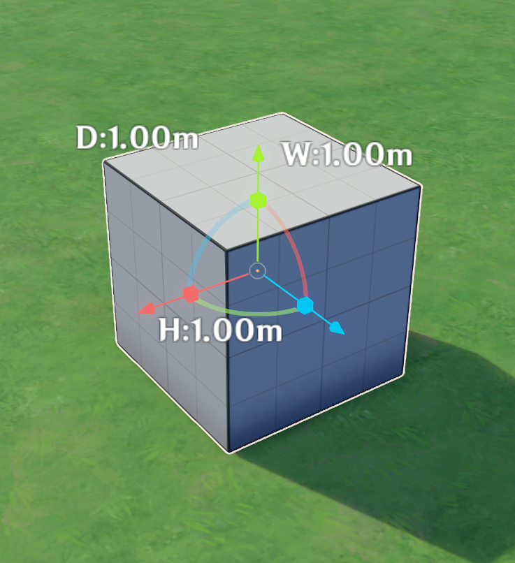
バウンディングボックスおよびサイズ
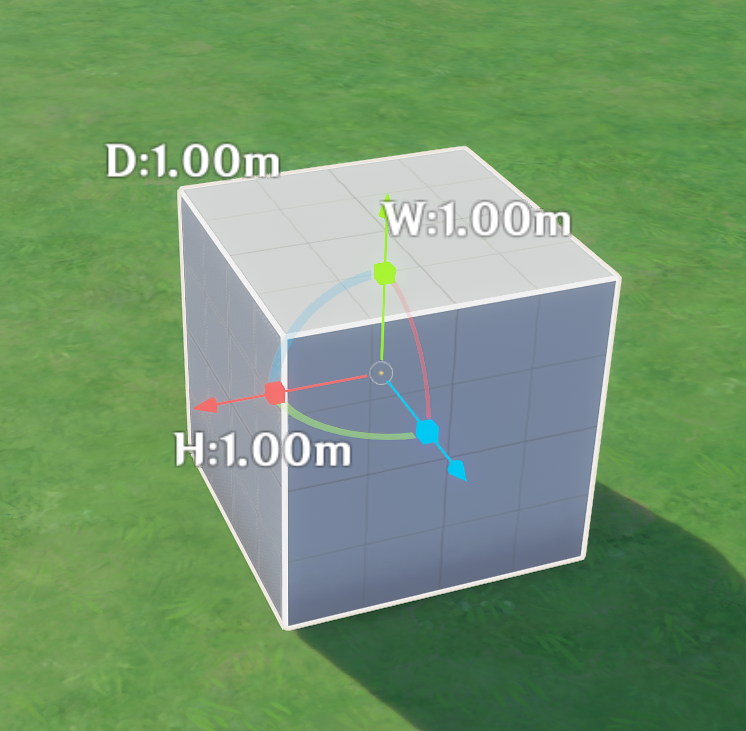
コリジョンとサイズ ※オブジェクトのみ
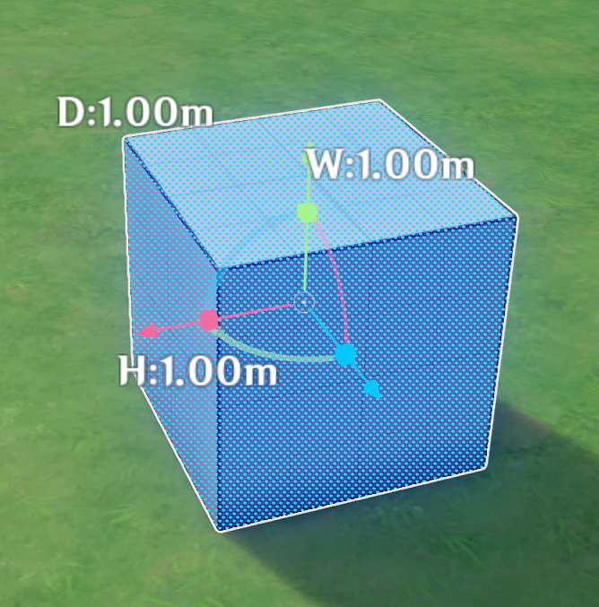
⭐5.備考機能
🌸1.Z軸表示
(1) 機能説明Z軸の正方向を示す補助UIを表示します。。
(2) 開き方
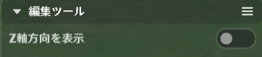
詳細パネル→下部→編集ツール
(3) 視覚効果
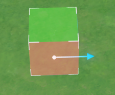
🌸2.3D備考
(1) 機能説明アイコンとテキストを使用して、編集シーン内のオブジェクトに備考を付けられます。
(2) 開き方
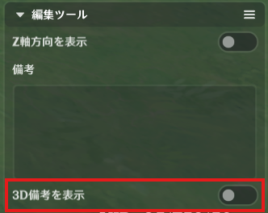
詳細パネル→下部→編集ツール
(3) 視覚効果
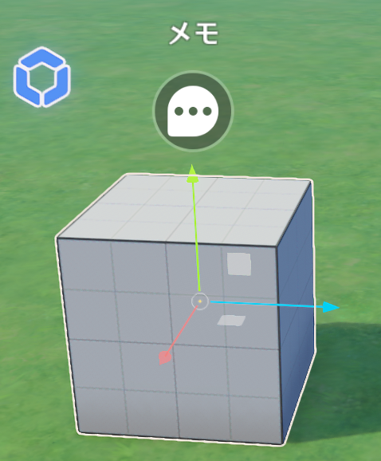
🌸3.常時備考表示
(1) 機能説明ステージ設定から、すべてのメモを常時表示するかどうかを制御できます。
(2) 開き方
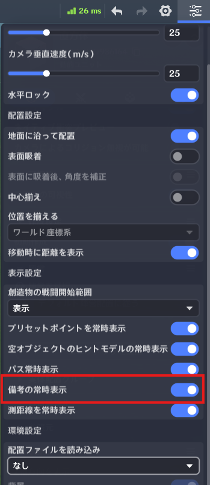
⭐6.モデルデータのコピー＆ペースト
🌸1.機能説明
オブジェクトモデルのデータをコピーできます。
コピー対称
※創造物は装飾品のみコピーされます。
🌸2.開き方
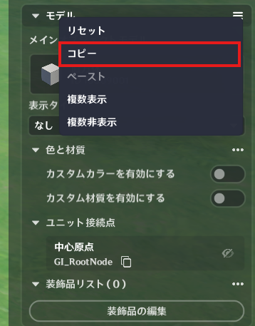
モデル→コピー
⭐7.複数選択時の中心点表示
🌸1.機能説明
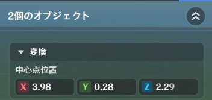
複数オブジェクトを選択した際に、選択グループの中心位置を表示します。
⭐8.距離測定
🌸1.概要
距離測定ツールは、シーン内の距離を計測できる標準機能です。
🌸2.ツールの使い方
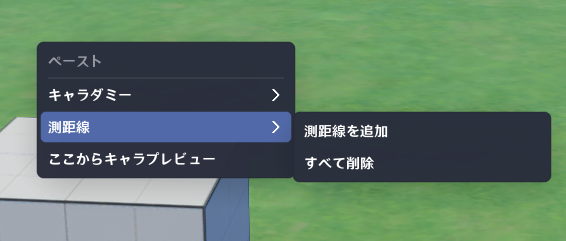
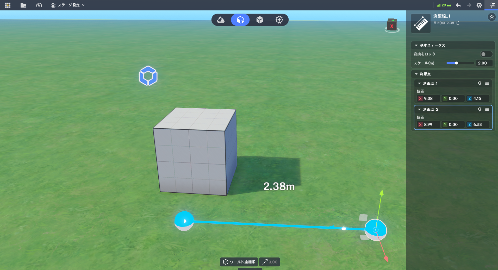
右クリックメニュー→測距線→測距線を追加
「測距線を追加」をクリックすると、計測モードに入ります。
地面上を2箇所クリックして地点を指定すると、その2点間の距離が画面上に表示されます。
🌸3.測距線の削除
🌸4.エディタ設定
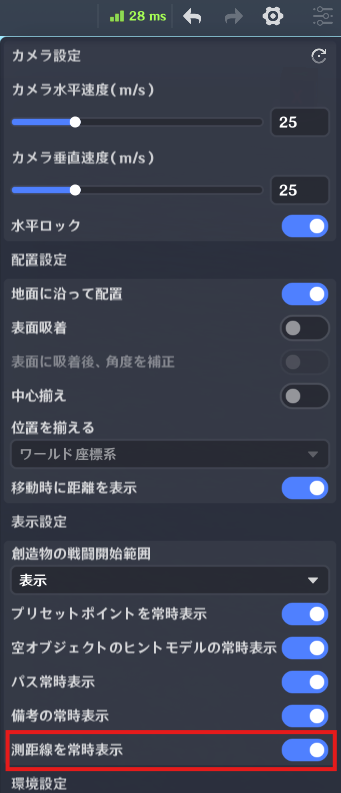
クイック設定から、測距線を常時表示するかどうかを選択できます。